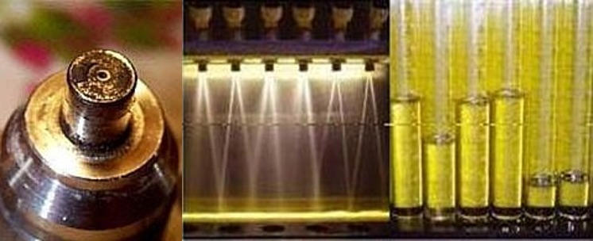
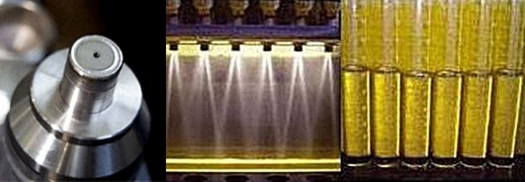

At Regent Fuel Injector, every injector undergoes a precise, thorough diagnostic and restoration process to meet OEM specifications. The procedure begins with pre-cleaning diagnostics to assess static and dynamic flow rate, spray pattern geometry, leak integrity, and electrical performance. This is followed by an intense three-stage ultrasonic cleaning process, enhanced by synchronized electronic pulsing to remove both internal and external deposits. After cleaning, each injector is re-tested on a calibrated test bench to verify flow balance, atomization quality, and pressure integrity. New filter baskets and seals are then installed to ensure proper sealing to prevent contamination. This comprehensive process guarantees that every injector performs consistently, efficiently, and reliably — restoring engines to their peak performance.


Dirty and clogged injectors can cause classic engine problems, lean misfire, rough idle, hesitation, loss of power, and higher emission levels of unburned fuel and carbon monoxide.
It doesn't take much of a restriction in an injector to lean out the air/fuel mixture. A 10% restriction in the fuel flow of a single fuel injector can be enough to cause a lean misfire. When this occurs, unused oxygen enters the exhaust and makes the O2 sensor read lean (too little gas, too much O2). If the O2 sensor reads lean, then the computer will compensate by increasing the on-time of the next injector(s) to fire, resulting in a now overly rich fuel condition. Now dirty hydrocarbon emissions (due to unburned fuel) and carbon monoxide emissions will rise in the cylinders that are now getting too much fuel. This is one cause of carbon and debris deposits on the injectors and the valves!
The computer can only analyse the combined exhaust gases, and it averages out the air/fuel ratios. One or more clogged fuel injectors will cause some cylinders to run leaner, and the computer will then compensate and cause other cylinders to run richer. This results in drivability and emissions issues.
Most customers experience a 10 to 15% improvement in gas mileage after getting their injectors cleaned and flow tested! Why pay for new fuel injectors when we can service them to "like new" for a fraction of the cost of new injectors? Getting your injectors cleaned and flow tested saves you money and just makes good sense.
Injectors are externally cleaned, visually inspected and numbered.
Test injectors for resistance, shorts and current draw.
Leak test, spray pattern, resistance while operating, and flow testing (pulsed and static) on our flow benches, with results recorded. Different test machines are set up for different injector types.
Filter baskets, o-rings, pintle caps and other components are removed where applicable.
Injectors are placed in the first ultrasonic cleaning tank to remove exterior particles and grease before the next two cleaning stages.
Cycled on and off in a temperature-controlled tank, allowing ultrasonic energy to dislodge particles and build-up inside the injector.
A further ultrasonic cleaning stage with a different cleaning solution — this three-tank, two-solution process ensures contaminants are fully removed.
A high-pressure back-flush removes any remaining internal particles.
Injectors return to the flow bench for retesting of spray pattern, flow rate, coil resistance and leak checking — repeating the cleaning process as many times as needed.
New filter baskets, o-rings, seals and pintle caps are installed where applicable.
A comprehensive test report with before-and-after data is prepared, and injectors are packed with old parts for return.
Instead of delivering fuel via an injector in the intake tract before the intake valve, GDI engines inject a fine mist of fuel directly into the combustion chamber — hence "Direct Injection." Direct injectors operate at fuel pressures between 450–3000 psi, pressurised by a mechanically driven, electronically controlled high-pressure fuel pump.
All direct injectors atomise a much smaller fuel droplet than a conventional MPI injector — as fine as ±65 microns versus ±165 microns. Maintaining that atomisation makes direct injection cleaning an essential part of a GDI maintenance schedule. Our testing equipment examines direct injectors for correct electronic operation and proper atomisation, restoring GDI injectors to original specification.
| Abbreviation | Manufacturer |
|---|---|
| FSI | VW / Audi — Fuel Stratified Injection |
| SCi | Ford — Smart Charge Injection |
| IDE | Renault — Injection Direct Essence |
| JTS | Alfa Romeo — Jet Thrust Stoichiometric |
| SIDI | Holden — Spark Ignition Direct Injection |
| HPI | BMW — High Precision Injection |
| HPDI | Porsche — High Pressure Direct Injection |
| Ecotec | GM, Vauxhall, Opel |
| CGI | Mercedes-Benz — Charged Gasoline Injection |
| DISI | Ford / Mazda — Direct-Injection-Spark-Ignition |
| GDI | Mitsubishi, Peugeot Citroën, Hyundai, Volvo |